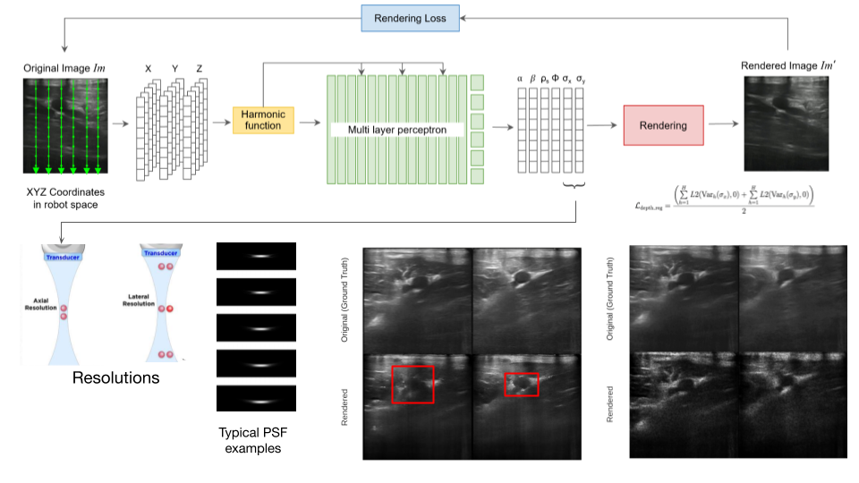

|
Ananya Bal I am pursuing my PhD in Robotics at the Robotics Institute, Carnegie Mellon University. I am advised by Dr. Laszlo Jeni and am currently exploring Hand-Object Interaction and Multimodal Foundational Models. Previously, during my master's at RI, I was advised by Dr. Howie Choset and Dr. John Galeotti and worked on implicit neural representations for medical ultrasound and their applications to segmentation, 3D reconstruction and modeling deformation in soft tissue. I am majorly interested in machine learning and computer vision applications for robotics. Before joining CMU, I completed my undergrad in CS from Vellore Institute of Technology where I focused on core ML and NLP projects. I have experience with building recommendation systems, ensemble classifiers, feature-based medical image diagnosis systems, and named-entity recognition models. I briefly interned at Fidelity Investments where I worked on intelligent document layout analysis for automated information retrieval from semi-structured legal documents. |
{kind=link}
Research Interests3D Perception, Vision for manipulation, AR/VR, Physics-informed Neural Networks, Generative Models |
Updates
|
|
Neural Implicit Representations for Medical Ultrasound Volumes and 3D Anatomy-specific Reconstructions
Ananya Bal Document | Slides | Presentation Video (Passcode: 7cc?LX!B)
Most Robotic Ultrasound Systems (RUSs) equipped with ultrasound-interpreting algorithms rely on building 3D reconstructions of the entire scanned region or specific anatomies. These 3D reconstructions are typically created via methods that compound or stack 2D tomographic ultrasound images using known poses of the ultrasound transducer with the latter requiring 2D or 3D segmentation. While fast, this class of methods has many shortcomings. It requires interpolation-based gap-filling or extensive compounding and still yields volumes that generate implausible novel views. Additionally, storing these volumes can be memory-intensive.
|
|
|
Adding Viewing Direction-dependence to Ultra-NeRF
Ananya Bal, Magdalena Wysocki, Mohammad Farid Azampour, John Galeotti, Howie Choset Slides Incorporating viewing direction-dependence to Ultra-NeRF for rendering true-to-orientation reflectance in ultrasound images. A normal surface field is learned to supplement a modified rendering function. |
|
|
Implicit Shape Representation for 3D Anatomy Reconstruction from Ultrasound Images
Ananya Bal, Magdalena Wysocki, Mohammad Farid Azampour, John Galeotti, Howie Choset Slides Weakly supervised volumetric implicit shape representation method. Applied to 3D anatomy reconstruction from multi-view 2D ultrasound images trhough Ultra-NeRF. |
|

|
Ultra-NeRF++: Learning Imaging System Properties in addition to Scene Parameters
Ananya Bal, Magdalena Wysocki, Mohammad Farid Azampour, John Galeotti, Howie Choset Slides Enhanced Ultra-NeRF by approximating spatially varying Point Spread Functions for the ultrasound imaging system in addition to the tissue reflectivity function of the scene. Network architecture also improved for rednering high-frequency artifacts. |
|
|
Towards Automated Void Detection for Search and Rescue with 3D Perception
Ananya Bal, Ashutosh Gupta, Pranav Goyal, David Merrick, Robin Murphy, Howie Choset IROS, 2023 (Oral Presentation) Paper | Poster | Video A novel layering-based point cloud processing approach using NetVLAD and COLMAP for improved registration and void detection in disaster scenes. |

|
U-RAFT: Unsupervised Deformable Ultrasound Image Registration and Its Application for Vessel Segmentation
FNU Abhimanyu, Andrew L. Orekhov, Ananya Bal, John Galeotti, Howie Choset IROS, 2023 (Oral Presentation) Paper | Video Making RAFT training unsupervised and applying it to predict vessel deformation under forces in ultrasound images. We use this further to generate ultrasound images at multiple force values and improve segmentation by 12% |
|
|
3D Deformation Simulation for Vascular Tissue with 2D Medical Imaging
Ananya Bal, Ashutosh Gupta, Ceci Morales, Artur Dubrawski, John Galeotti, Howie Choset ICRA Workshop (3rd Workshop on Representing and Manipulating Deformable Objects), 2023 (Oral Presentation) Paper | Poster A 3D deformation simulation framework where we reduce the sim2real gap by optimizing for material properties through maximizing IoU of the vessel area from the simulation and the real-world ultrasound images. |
|
|
A Curvature and Trajectory Optimization-based 3D
Surface Reconstruction Pipeline for Ultrasound
Trajectory Generation
Ananya Bal, Ashutosh Gupta, FNU Abhimanyu, John Galeotti, Howie Choset ICRA, 2023 (Oral Presentation) Paper | Poster | Video A 3D reconstruction optimization-based method to identify a high curvature region for autonomous ultrasound scanning. A novel, comprehensive 3D reconstruction evaluation score is proposed. |
|
|
Modeling 3D Deformations under External Force from 2D Images
Ananya Bal, FNU Abhimanyu Presented in 16-824, Visual Learning and Recognition by Prof. Deepak Pathak. Our pipeline learns deformation using 3D point clouds of the deforming object, material properties, force and its point of application and predicts a deformed version of the object. As we go from images to point clouds, our method uses 2D RGB images to learn 3D deformations. |
|
Feel free to steal this website's source code. Do not scrape the HTML from this page itself, as it includes analytics tags that you do not want on your own website — use the github code instead. Also, consider using Leonid Keselman's Jekyll fork of this page. |